1、无论你想做些什么，都应该先在正设计模式下导入翼型。因为机翼模块和螺旋桨模块都需要定义翼型后，才能工作。
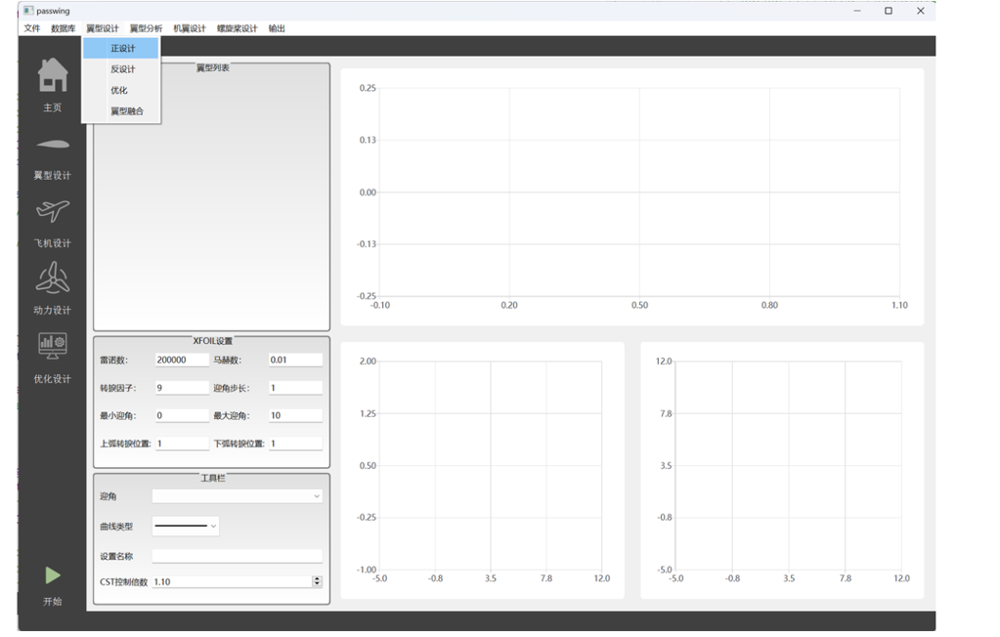
2、打开数据库，点击翼型库，PassWing导入了一部分profili库和全部UIUC库的翼型。profili库的翼型预处理过，因此可以按照某种排序方式排列
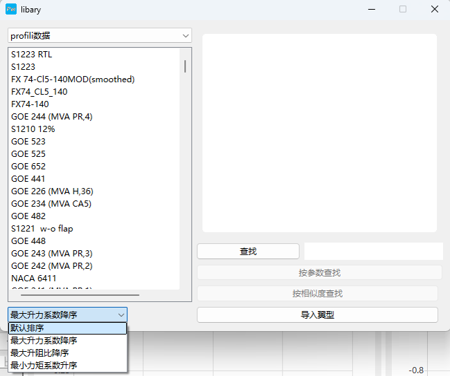
3、导入翼型
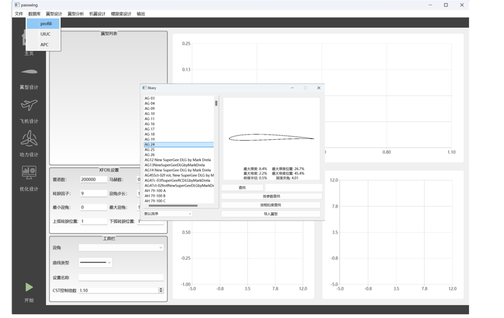
4、翼型正设计截面由以下四个模块组成，工作区可以通过拖动点修改翼型，翼型列表可以改变参数化的阶数，设置栏主要设置翼型的雷诺数等。
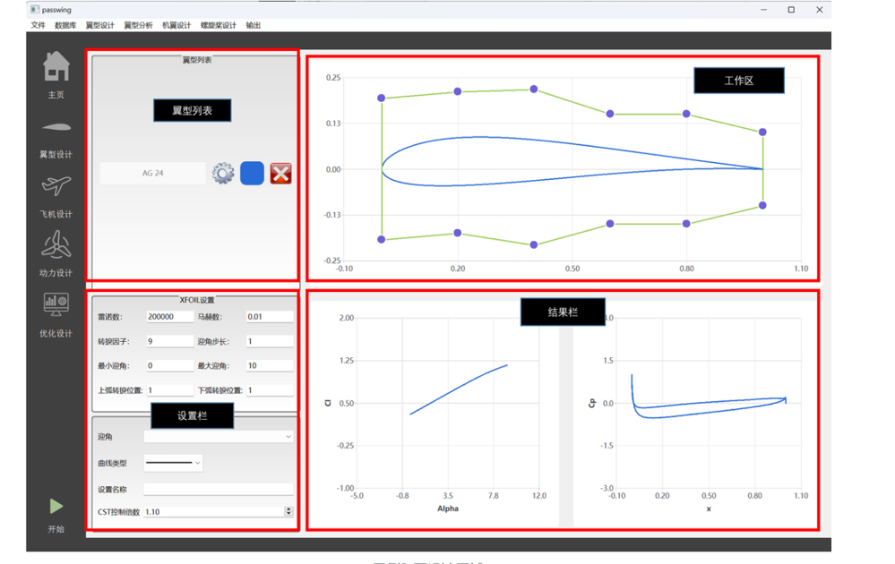
5、你可以通过改变CST阶数检查拟合残差，当然阶数越高你对翼型的控制能力就越强，但是小心过拟合。
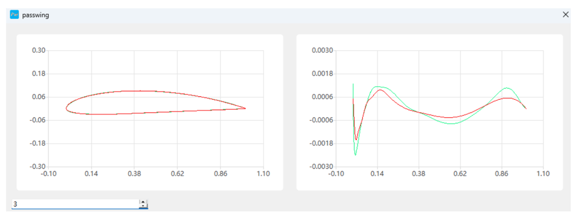
6、对结果区右键，可以改变曲线类型，还可以保存曲线，也可以添加散点。
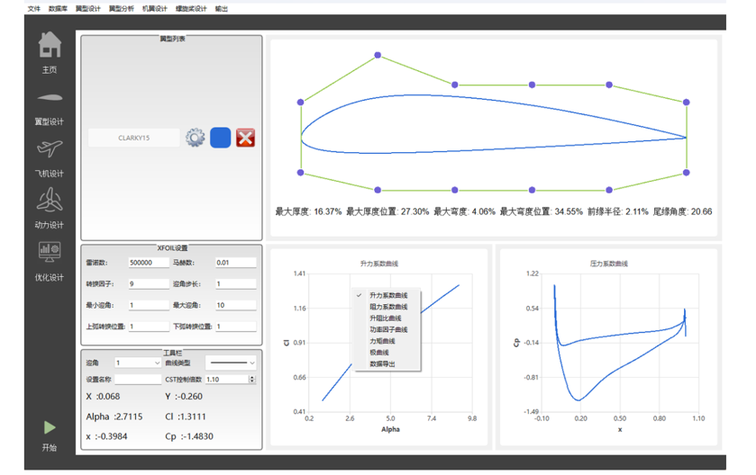
1、翼型融合，就是生成两个翼型之间的翼型，调整滑块可以让翼型更接近谁。
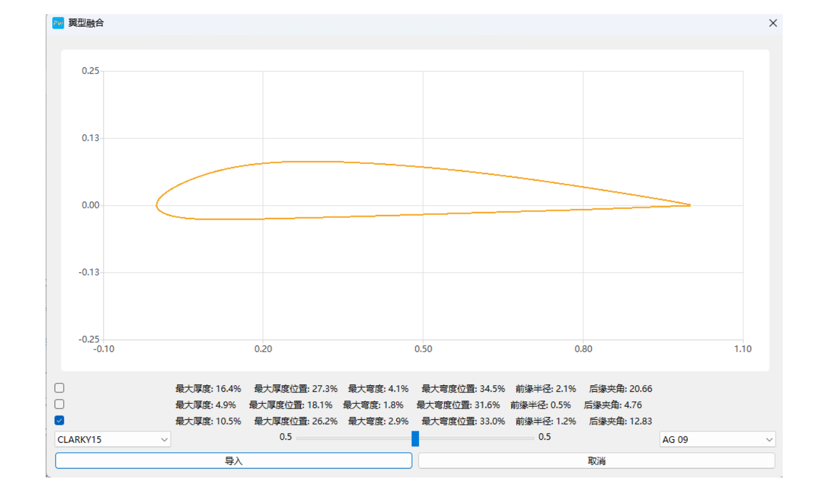
1、这是机翼的设计窗口，左侧是树状列表，又上侧是结果切换按钮。
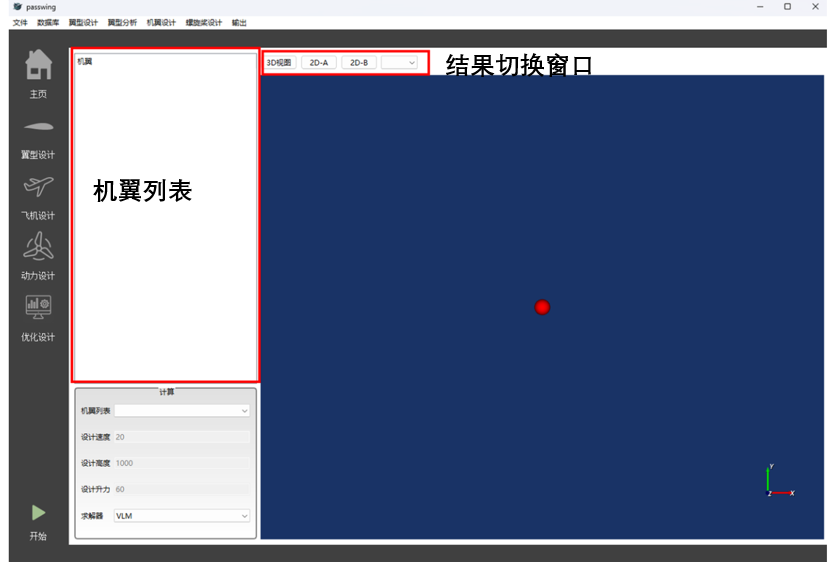
2、点击机翼设计菜单下的机翼定义，定义你的第一幅机翼。定义方式有优化，创建梯形翼和椭圆翼更简单。右下角是导出Catia宏文件，你可以调整X方向的网格数量，保证Catia生成翼型时的精度。
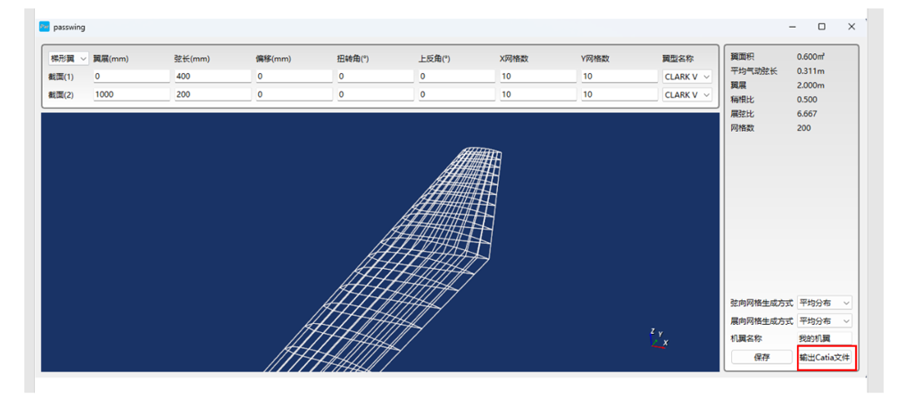
3、定义好机翼后，可以进行求解参数设置，速度、高度、迎角都要进行设置。
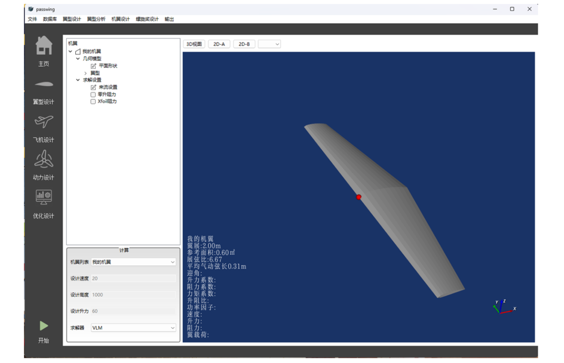
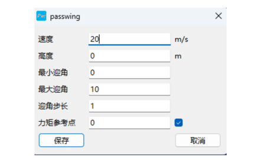
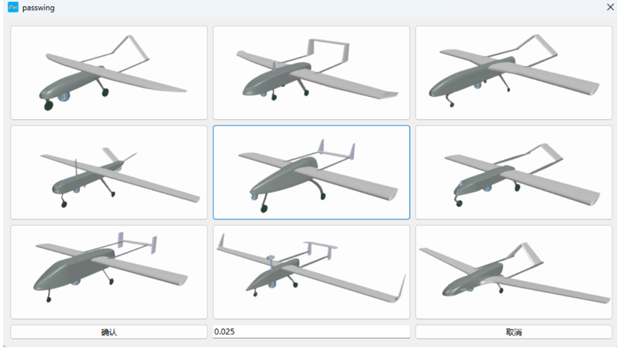
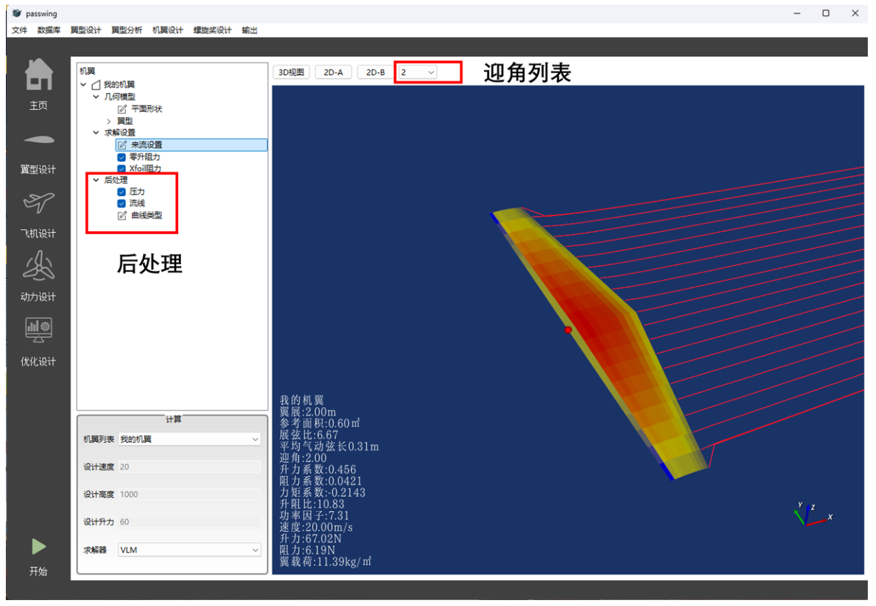
6、选择2D-A或者2D-B可以切换结果，曲线类型选项可以设置曲线风格。注意，当机翼列表有多副机翼时，只有点击该机翼的根节点，对其的设置才有效。
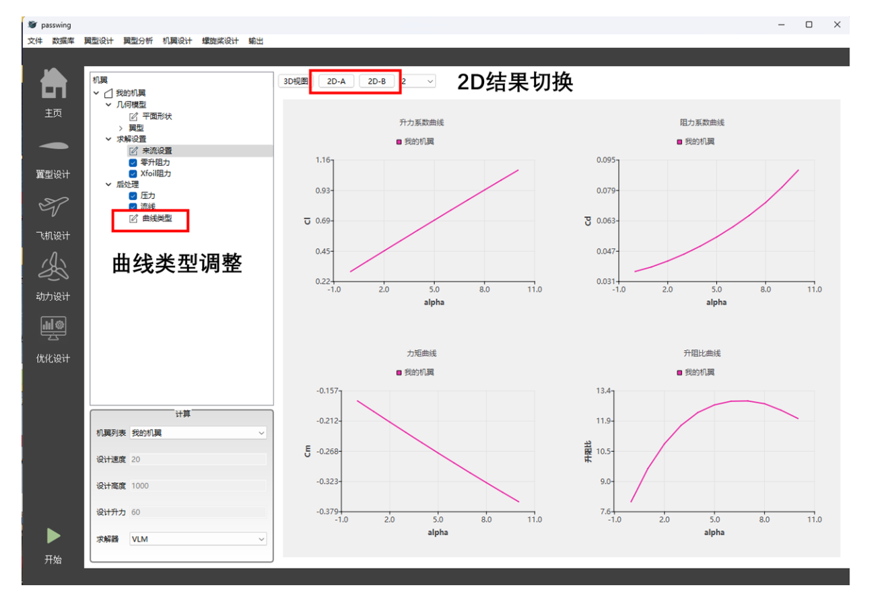
1、进入螺旋桨分析界面后，点击螺旋桨库，从中选择一个要进行分析的模型
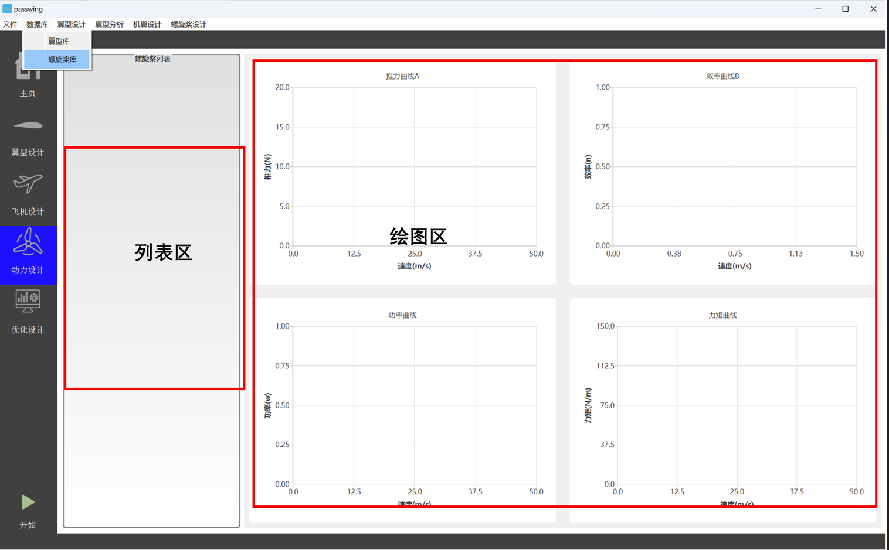
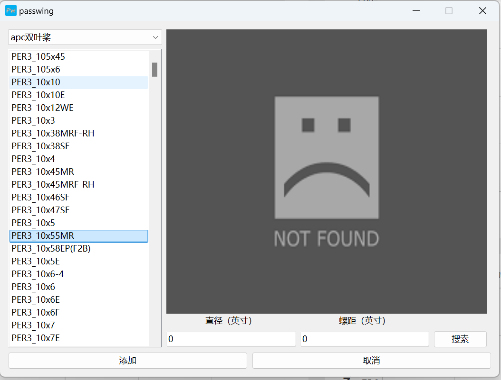
2、鼠标可以拖动曲线，因为改变了转速，为了精确的控制转速你可以在左侧转速框微调转速，你可以监测一个速度，然后程序会自动计算固定转速、固定速度下的螺旋桨性能。这时你可以右键任何一个图表，添加机翼的阻力进去，可以估算出飞机的最大速度，或者某个速度下效率最高
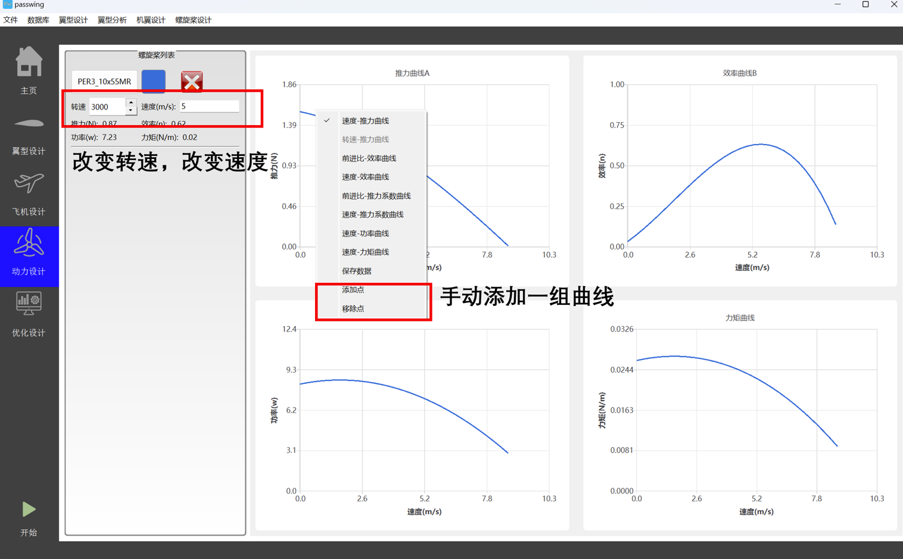
1、进入螺旋桨设计界面，依据经验设置螺旋桨的推力、等数据（十分依赖经验），点击求解，程序会生成较高效率的螺旋桨，但这会很耗时
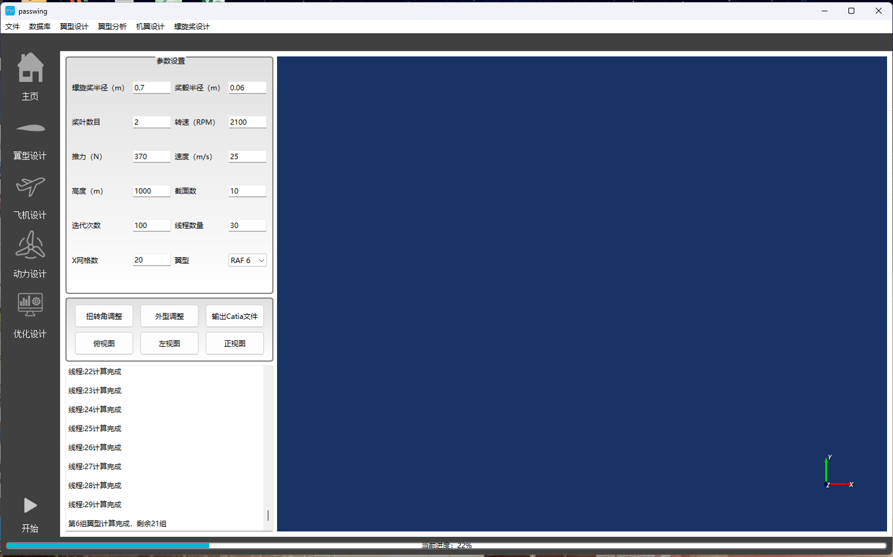
2、程序生成的螺旋桨，外表不一定很广顺，你可以像改变翼型那样调整螺旋桨扭转角分布和几何形状，螺旋桨生成成功后点击输出Catia文件，你可以获得单个桨叶的Catia宏文件
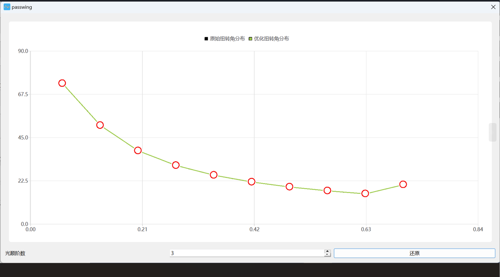
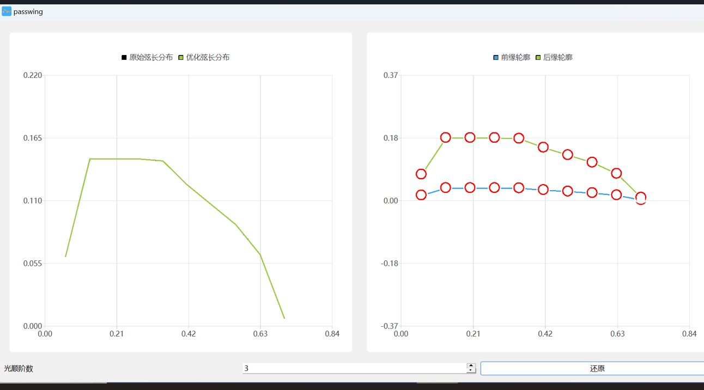